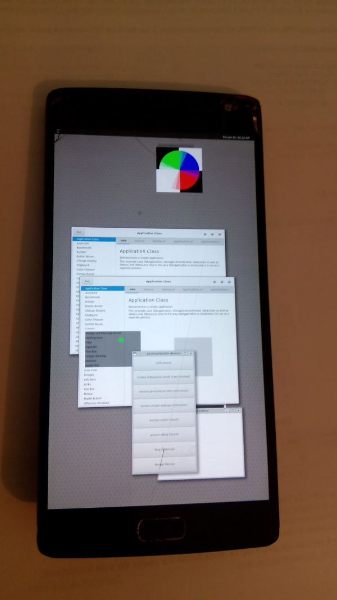

OnePlus Two (oneplus-oneplus2)
|
 OnePlus Two running Weston | |
| Manufacturer | OnePlus |
|---|---|
| Name | Two |
| Codename | oneplus-oneplus2 |
| Released | 2015 |
| Category | testing |
| Original software | Android |
| Original version | 5.1.1 |
| postmarketOS kernel | 3.10.108 |
| Hardware | |
| Chipset | Qualcomm Snapdragon 810 (MSM8994) |
| CPU | 4x 1.7 GHz A57 + 4x 1.5 GHz A53 |
| GPU | Adreno 430 650 MHz |
| Display | 1080x1920 Full HD IPS LCD In-Cell |
| Storage | 16 or 64 GB eMMC v5.0 |
| Memory | 3 or 4 GB LPDDR4 RAM |
| Architecture | aarch64 |
| Unixbench Whet/Dhry score | 1409.9 |
{kind=link}
| USB Networking |
Works
|
|---|---|
| Flashing |
Works
|
| Touchscreen |
Works
|
| Display |
Works
|
| WiFi |
Broken
|
| FDE | |
| Mainline |
Broken
|
| Battery |
Works
|
| 3D Acceleration |
Broken
|
| Audio | |
| Bluetooth |
Broken
|
| Camera |
Broken
|
| GPS |
Broken
|
| Mobile data |
Broken
|
| SMS |
Broken
|
| Calls |
Broken
|
| USB OTG | |
| NFC | |
| Accelerometer |
Broken
|
|---|---|
| Magnetometer | |
| Ambient Light | |
| Proximity | |
| Hall Effect | |
| Barometer | |
| Power Sensor | |
| Camera Flash | |
|---|---|
| Keyboard | |
| Touchpad | |
| USB-A | |
| HDMI/DP | |
| Ir TX | |
| Ir RX | |
| Stylus | |
| Haptics | |
| Ethernet | |
| FOSS bootloader | |
Contents
Development status
As of 23/05/2021 this device is not recommended to be used for mission critical tasks as it's not possible to connect to the Wi-Fi nor broadband and it's lacking implementation of Direct Rendering Manager (DRM) in linux kernel makes it impossible to use graphical interfaces such as phosh and plasma-mobile.
What works:
- Kernel compilation
- Flashing system (including recovery mode flashable zip)
- Booting kernel via fastboot
- initramfs boot
- Flashing kernel
- USB network
- SSH connectivity (using USB network only)
- sxmo
- Touchscreen
What does NOT work:
- Wi-Fi (blob needed)
- Direct Rendering Manager (DRM)
- phosh
- plasma-mobile
- Weston boots to blank screen (no available back-end)
- Default deviceinfo uses only 4 of available 8 cpu cores (#CPU tuning)
BIOS built-in signals
Majority of all android devices have three signals accessible by pressing physical buttons depending on the runtime state of a device.
Hard shutdown
Pressing and holding POWER button for +- 20 seconds will force device shutdown allowing you to access recovery and fastboot mode.
Recovery
is used to recover a device which Operating System is unable to boot. To access this mode press and hold when the device is turned off
VOLUME_DOWN + POWER
Fastboot
is mainly used during the device production for manufacturer to load the required software onto the device. This mode can also be used to flash 3rd party recovery.
To access it press and hold while device is turned off
VOLUME_UP + POWER
Deployment of pmos on the device
This section covers recommended steps to deploy PostmarketOS on Oneplus2, these steps are made for a reference and should be used with a causion.
Preparation
pmbootstrap
To install PostmarketOS you need a pmbootstrap, see https://wiki.postmarketos.org/wiki/Installing_pmbootstrap for more informations
Once you've installed it, follow-up with pmbootstrap init and go through the Terminal interface selecting Vendor `oneplus` and `oneplus2`. If the vendor is not available you might need to use and edge channel.
USB-C cable
Lot of USB-C cables are crappy which causes the insulation to get brutal and chip off causing short in-between pins
TODO(Krey): Photo
resulting in a bad connecting and failure to enumerate (identify the USB device for the system) in dmesg seen as:
[535470.046440] usb 2-1: new full-speed USB device number 76 using xhci_hcd [535470.186582] usb 2-1: device descriptor read/64, error -71 [535470.434567] usb 2-1: device descriptor read/64, error -71
Verify using dmesg -w to ensure that your cable has data pin linked and that it's working without issues for example:
[536030.265487] usb 2-1: new high-speed USB device number 87 using xhci_hcd [536030.421932] usb 2-1: New USB device found, idVendor=18d1, idProduct=4ee2, bcdDevice= 3.10 [536030.421944] usb 2-1: New USB device strings: Mfr=1, Product=2, SerialNumber=3 [536030.421948] usb 2-1: Product: Android [536030.421952] usb 2-1: Manufacturer: OnePlus [536030.421956] usb 2-1: SerialNumber: REDACTED [536031.780781] usb 2-1: USB disconnect, device number 87
Installation
flashable zip method
Flashable zip files can be installed using: A. Recovery mode B. ADB sideloading
To get a flashable zip invoke:
pmbootstrap install --android-recovery-zip
To export it in a default path /tmp/postmarketOS-export/pmos-oneplus-oneplus2.zip use:
pmbootstrap export
fastboot method
Put the device in a "fastboot mode" and invoke:
pmbootstrap flasher flash_kernel
Hardware details / status
hwtest output
| Category | Model | Path | Status | Value |
|---|---|---|---|---|
| framebuffer | mdssfb_90000 | /sys/class/graphics/fb0 | Working | U:1080x1920p-360 |
| framebuffer | mdssfb_a0000 | /sys/class/graphics/fb1 | Working | |
| input | gpio-keys | /dev/input/event6 | Working | |
| input | synaptics | /dev/input/event5 | Working | |
| input | synaptics | /dev/input/event4 | Working | |
| input | qpnp_pon | /dev/input/event3 | Working | |
| input | STM VL6180 proximity sensor | /dev/input/event2 | Working | |
| input | fpc1020 | /dev/input/event1 | Working | |
| input | tri-state-key | /dev/input/event0 | Working |
See also /sys/project_info/component_info/
CPU tuning
The default deviceinfo defines boot_cpus=0-3. This boots only the 4x 1.56 GHz A53 cores. This can be shown via cpufreq-info (package cpufrequtils), or htop. The unixbench result for this configuration is 1409.9, similar to other quadcore A53 devices.
The default governor is battery-draining "performance".
To utilize all cores, extract and edit (or update) bootimg.cfg from boot.img to use boot_cpus=0-7. Boot the new image via fastboot boot boot.img. Alternatively, edit deviceinfo and repeat pmbootstrap install. This configuration will boot the 4x 1.56 GHz A53 cores as cpus 0-3 and the 4x 1.77 GHz A57 cores as cpus 4-7. The unixbench result for this configuration is 2702.1. (Note at present the only other MSM8994 device in the benchmark table, sony-sumire, for unknown reasons uses boot_cpus=0-5, and thus has a lower score).
The governor for each quad is assigned separately:
sudo cpufreq-set -c 0 -r -g ondemand
sudo cpufreq-set -c 4 -r -g ondemandThis change does not persist across reboots. For a persistent change uniform across all cores, confirm that the governor listed in /etc/conf.d/cpufrequtils is acceptable, then install the service as:
sudo rc-update add cpufrequtils bootAlternatively, reconfigure the kernel (CPU Frequency scaling section).
Affiliates
Maintainer(s): - None
Contributor(s):